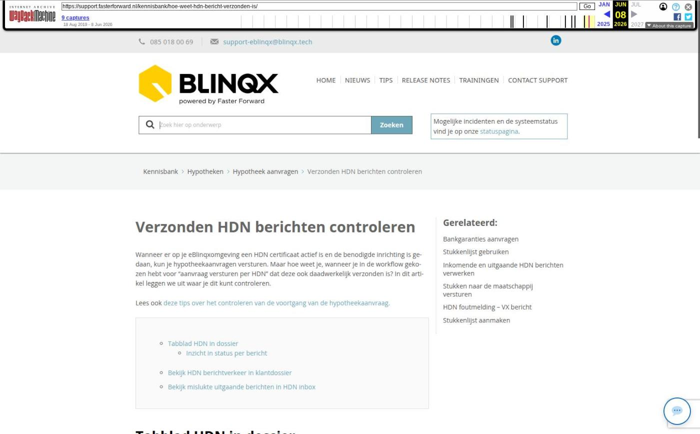

Verzonden HDN berichten controleren

Tekstinhoud
Verzonden HDN berichten controleren
Wanneer er op je eBlinqxomgeving een HDN certificaat actief is en de benodigde inrichting is gedaan, kun je hypotheekaanvragen versturen. Maar hoe weet je, wanneer je in de workflow gekozen hebt voor "aanvraag versturen per HDN" dat deze ook daadwerkelijk verzonden is? In dit artikel leggen we uit waar je dit kunt controleren.
Lees ook deze tips over het controleren van de voortgang van de hypotheekaanvraag.
Tabblad HDN in dossier
Inzicht in status per bericht
Bekijk HDN berichtverkeer in klantdossier
Bekijk mislukte uitgaande berichten in HDN inbox
Tabblad HDN in dossier
Om te controleren of het bericht goed is verstuurd, ga je in het dossier naar de betreffende hypotheekofferte. Klik vervolgens op het tabblad "HDN". Je ziet hier een overzicht van verzonden en ontvangen HDN berichten.
Indien gewenst kun je aan linkerkant nog selecteren welke richting HDN berichten je wenst te zien, bijvoorbeeld voor "Uitgaand".
Inzicht in status per bericht
Je ziet op je scherm wanneer het bericht toegevoegd is, welke status dit bericht heeft en indien verwerkt, op welk tijdstip deze verwerkt is. Als de "Status in eBlinqx" kolom aangeeft dat het bericht nog "In de wachtrij" staat en deze status veranderd niet naar "Verwerkt" na maximaal een half uur, neem dan contact op met jouw interne eBlinqxbeheerder of met onze support afdeling.
Het kan zijn dat er in de kolom 'Opmerkingen' een foutmelding staat. Lees hier wat de foutmelding betekent en hoe je deze kunt oplossen. Wanneer er een VX bericht is teruggekomen kan je hier lezen wat te doen.
De maatschappij stuurt gemiddeld binnen een half uur een statusbericht (SX) als reactie op het aanvraagbericht. Dit zie je ook terug in dit tabblad. Gebruik het vergrootglas rechts in de regel van het bericht om te zien wat de inhoud van het betreffende bericht is. Indien er binnen 4 uur geen statusbericht is teruggekomen, dan ontvang je een e-mail met daarin de melding dat er geen SX bericht is terugkomen en het verzoek de aanvraag te controleren.
Bekijk HDN berichtverkeer in klantdossier
Op het tabblad 'HDN' onder een hypotheek in een klantdossier, zie je de historie van HDN. Zo zie je bijvoorbeeld of een bericht is opgehaald door de maatschappij. Dit via het logfile-icoon. Wanneer er een VX melding op het aanvraagbericht is terugkomen, dan zie je door het klikken op het logfile-icoon direct de foutmelding terug. Ook kan je via dit icoon aanvullende informatie over het HDN-bericht ophalen, bijvoorbeeld het verzendernummer en ontvangernummer.
Deze functionaliteit is niet standaard beschikbaar én alleen beschikbaar voor interne beheerders van eBlinqx. Wil jij deze functionaliteit gebruiken? Stuur dan een e-mail naar support-eblinqx@blinqx.tech.
Bekijk mislukte uitgaande berichten in HDN inbox
Ook kan je vanuit de HDN inbox – uitgaand mislukt controleren of het bericht correct is verzonden. Indien het bericht niet is verzonden, komt deze hier te staan en daarbij de melding waarom het bericht niet is verzonden. In de kolom 'Oorzaak fout' kan je zien of het gaat om een storing of een validatiefout. Hier kan je meer informatie vinden over de verschillende type uitgaand mislukt berichten en hoe je hiermee om dient te gaan. In de uitgaand mislukt box is het logfile-icoon zichtbaar voor iedereen. Wanneer er sprake is van een VX-foutmelding dan kan je via het icoon direct de inhoud zien van deze melding.
Laatste update: 15 oktober 2025
Was deze informatie nuttig?
Ja Nee